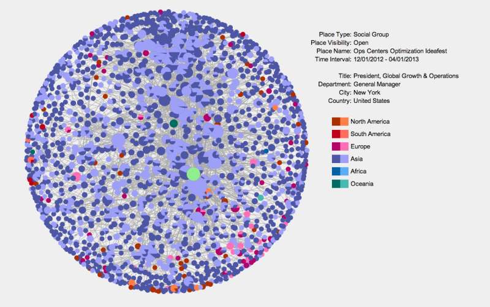
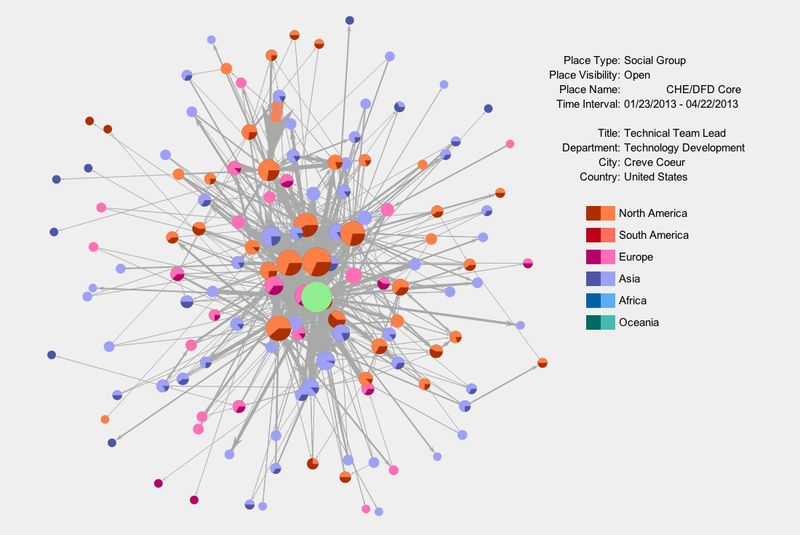
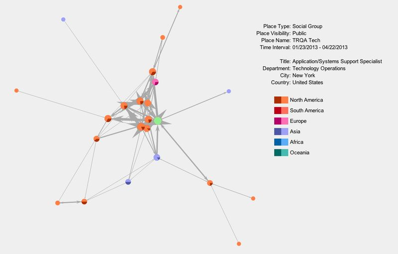
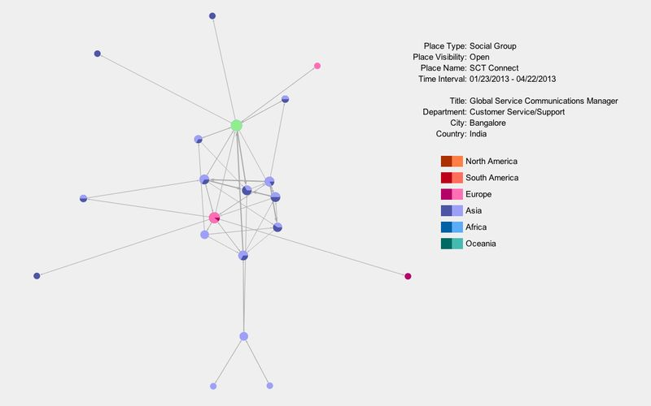
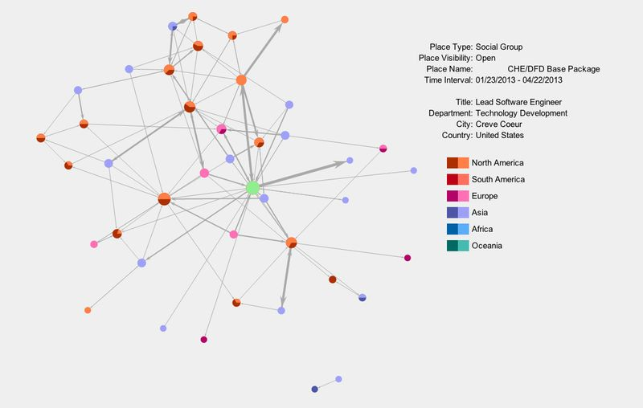
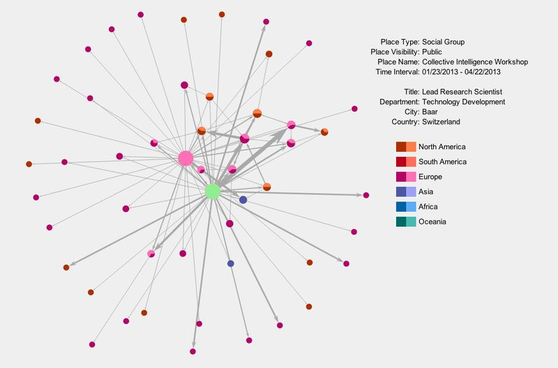
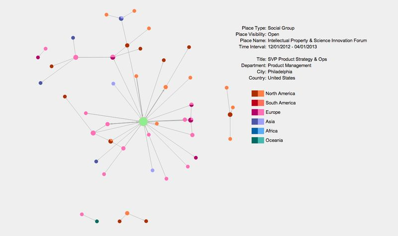
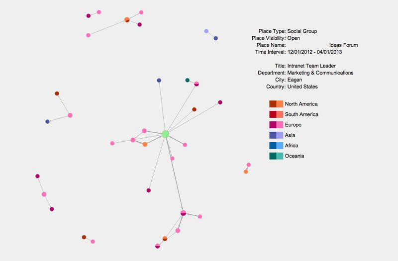

on
Uncovering Emergent Collaboration Through Community Sensemaking - Part 4
Localizing Collaboration Behavior
The challenge of uncovering substantive collaborations stems from the fact that we are searching for clustering across relationship structure, social context and time. As we discussed in the previous post, our representational choices constrain the types of questions we can answer. By constructing a global interaction network, aggregating interaction activity across all locations in a Jive community, we conflated interactions occurring across a number of social contexts. This eliminated our ability to uncover clusters of interaction activity occurring in a particular social context.
In our next refinement of the process, we teased apart the global interaction network into a collection of local interaction networks for all social groups in a given community. While Jive communities have both social groups and spaces, a focus on social groups was expedient for two reasons. First, it simplified the development needed to test the fundamental ideas. Second, social groups turned out to be where most of the interaction activity resided in a number of Jive communities.
By separating the global interaction network into a collection of local interaction networks, a new challenge was created: the need to cue a user to social groups exhibiting dense subgraphs embedded in their corresponding local interaction networks. To address this ranking task, we leveraged a property of an undirected graph known as the graph degeneracy. Recall from the previous post, we introduced k-core filtering as a mechanism by which we can remove extraneous graph structure and focus on denser subgraphs within the network. As k is incrementally increased, the network is incrementally reduced to smaller, denser subgraphs until the point where no subgraph exists for k > k*. This maximum value k* for which there is a non-empty k-core is precisely the graph degeneracy.
To rank social groups in a given community, we applied a two-step ranking procedure on the corresponding local interaction networks. First, the networks were grouped by graph degeneracy. Second, each set of networks exhibiting graph degeneracy k was sorted by the number of nodes in each k-core. In the final ranking, the social group at the top of the list has a local interaction network with the largest observed graph degeneracy k*max and the largest number of nodes within its k*max-core. The social groups that follow are those with graph degeneracy k*max and a decreasing number of nodes in their k*max-core. This pattern then repeats in the ranked list for all social groups with graph degeneracy k*max-1 and so on.+
Collaboration Discoveries
With the ranking process implemented, we returned to the large multinational community examined in this thread and processed the 1500+ active social groups. From the overall set, we first filtered the list of social groups to the 50 most active groups in terms of interaction activity in the interaction class. Then we ranked ordered the remaining social groups for review. The following networks were presented for review through a Python web application built specifically for interactive analysis. The network layouts were pre-computed using graph-tool and rendered in the browser with RaphaelJS. Below are a few of the discoveries that came to light.
The first time we processed the data, the following social group rose to the top of the list. Before we discuss the specifics of this example, some context about the network diagram is necessary. Each network diagram depicts the local interaction network for the time interval specified. Directed edges indicate the presence of substantive interaction activity between the users represented by the associated nodes. The edges are oriented in the direction of response. The edge thicknesses are scaled by the number of interactions that took place with that orientation.
Given this multinational is truly a global organization, the users are color-coded by continent. Notice there are pie charts on some of the user nodes. The pie charts display the degree of user response activity. If a selected user has interacted with n other users and responded to nr of those users, the degree of response is represented in the pie chart as the fraction nr/n. Each continent has an associated light and dark color. The light color corresponds to response activity. Solid light nodes represent users who have responded to every user they’ve interacted with. Solid dark nodes represent users who haven’t responded to any of the users they’ve had an interaction with.

Upon seeing this network, we immediately reached out to our colleagues at the multinational to gain further context. Unbeknownst to us, they had recently run an ideation session with paricipation from around the globe. They generally understood the event had been a success but didn’t understand more specificly what had transpired. Without any prior knowledge, we were able to rapidly identify this instance of rich interaction and provide a preliminary view of the types of interaction taking place. In contrast to other networks in this community, we saw significant interaction and response behavior. Some notable counterexamples are the users represented by smaller, dark nodes from outside Asia. In a number of cases, these were senior executives who only generated content receiving some degree of response; they never responded to content generated by others over the specified time period.
Our discussion with our colleagues highlighted the logical next steps for analysis once an event such as this is uncovered. The dimension they wanted to navigate in conjunction with relationship structure was time. They wanted to understand the time course of the event and the discussions that were most compelling and far-reaching. The scale of such an event necessitates attentional cues when one is reviewing the resulting artifacts afterwards. We anticipated this need and had planned to investigate ideas for linked navigation across structure and time. Without a doubt, there is still much to be done.
The next social group that repeatedly appeared at the top of the list was the following product group. Here we saw software engineers and managers from around the globe routinely coordinating their activities. Notice the interaction relationship near the top center of the diagram that is colored orange and emanates from a user in Asia to a user in North America. That relationship is colored orange because the event count for that relationship was so large that it needed to be thresholded when drawing the diagram. Prior to thresholding, the edge was so thick that is obscured a good portion of the diagram. Rich collaboration environments such as Jive are powerful in situations where users are separated by significant time and distance. We saw a number of pairs of users who took advantage of the environment when faced with such separation.

After reflecting on these first two examples, one might question whether it is even necessary to employ graph degeneracy to detect such groups. Based on sheer volume of interaction activity alone, shouldn’t one be able to spot these substantive collaborations? While that may be possible once the social group has reached a significant level of interaction, it misses the broader sensemaking needs that we wanted to support. Recall that if we can detect unknown events and unanticipated use cases early, we are able to take action earlier to capitalize on potentially fleeting opportunities. At a minimum, it opens the door to accelerating the pace at which the organization learns. Catching innovation and discovery early implies we’re in search of a weak signal that is not obvious if we focus on interaction activity alone. A structural approach helps us uncover the opportunities we seek. The following social groups show examples of smaller groups of users engaged with one another. These were often the surprises for community managers: small pockets of interaction in their community that they were completely unaware of.



Moving farther down the ranked list, one could see the transition to networks with more of a hub-and-spoke structure. Often these networks were not fully connected as well. The following networks are representative of this pattern. While these were less interesting from the perspective of collaboration, they raised other questions. One simple question was whether the observed relationship structure was desirable. In some cases, it was to be expected given the group goals. In other cases, the hub-and-spoke pattern represented potential organizational fragility that needed attention. As always, context colors the interpretation. Making significant inferences based on the network diagrams alone is dangerous.



Conclusion
This investigation was illuminating for us in many respects. The user responses to the structural cues we provided were overwhelming positive once we segmented interaction activity by location. The questions they asked verified our expectations about the outstanding needs for linked navigation between the structural and temporal dimensions and drill-down capability to understand the specific context of interaction relationships. Finding the appropriate combination of analytics and interactivity is a constant challenge, one that requires iterative development with access to end users. The search for a compelling workflow is intimately tied to understanding the sequence of questions users will invariably want to pursue as they navigate along different projections of the underlying multi-relational data. Being able to relate what they are seeing along multiple dimensions is key as they shift their focus of exploration. In the future, we look forward to exploring more of these issues in related sensemaking challenges.
+ As one can imagine, there are a variety of plausible ranking approaches one could employ to detect collaboration groups. Our goal here was to utilize a process that emphasized density of connection and number of people involved. Focusing on the densest core of the network creates a ranking process that is invariant to the low density structure which clusters are embedded in. We want to detect dense clusters regardless of the type of lower density structure that has formed around them.